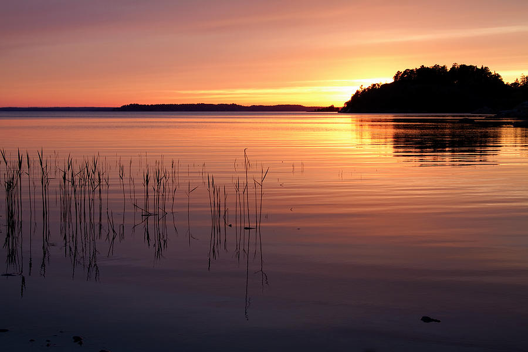

Stockholm to Gothenburg Coastal Route Sweden
Day 1 - June 12, 2025

Evening light over the Stockholm Archipelago
Distance: 92km
Elevation: +620m
Moving Time: 5h 12min
Ferry Crossings: 3
The midnight sun cast golden light across the water as I pedaled away from Stockholm's old town. Following the Svealandsleden cycle route, the first day treated me to endless island-hopping across the archipelago, with small red cottages dotting the rocky shores.
🌤️ Partly cloudy, light breeze from the west, 18°C (felt warmer in the sun)
Today's Highlights
- Early morning departure past Gamla Stan's colorful buildings
- Ferry to Vaxholm with locals commuting by bicycle
- Picnic lunch of smoked salmon on Grinda island
- Unexpected sauna invitation from friendly locals
- Camping by the water with endless twilight
Local Discovery
The allemansrätten (right of public access) makes Sweden perfect for cycle touring - wild camping is permitted almost anywhere, and I found the perfect sheltered spot by the water to pitch my tent.